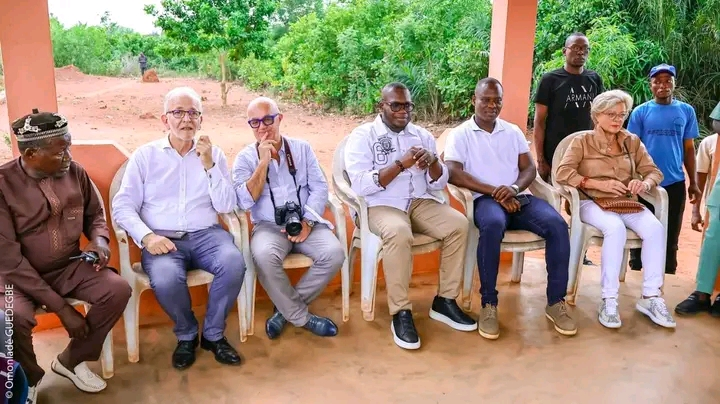
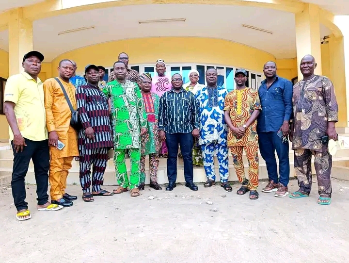

Né à Abomey · Ingénieur en Ingénierie Énergétique et Électrique
Fils du Danxomè, porteur d'une vision pour la cité royale — Mandat 2026–2033
Métolé Franck Kpassassi est né à Abomey, la cité royale du Danxomè, au cœur du Département du Zou, en République du Bénin. Enraciné dans cette terre millénaire, héritier de la fierté des rois du Danxomè, il a très tôt cultivé la conviction que la grandeur d'Abomey n'est pas seulement celle du passé, mais aussi celle de demain.
Ingénieur de formation, rigoureux et méthodique, il a forgé son expertise à travers des études poussées en Ingénierie Énergétique et Électrique, complétées par un Master en Énergie Renouvelable et Efficacité, un certificat de Gestionnaire de Projets et un Master ès Sciences Physiques. Ce socle académique exceptionnel lui permet d'aborder la gestion municipale avec une vision à la fois technique, stratégique et humaine.
Désigné par le parti Union Progressiste le Renouveau, il est officiellement investi Maire de la Commune d'Abomey en février 2026 pour un mandat de 7 ans, succédant à Antoine Djedou avec l'ambition déclarée de moderniser la cité des Rois sans en trahir l'âme.
Son programme, intitulé « Abomey, de Cité Royale à Ville Prospère », articule 7 axes prioritaires autour de la culture, des infrastructures, de la jeunesse, de l'économie locale, de la santé, de l'environnement et de la gouvernance. Parce qu'Abomey n'est pas seulement un patrimoine à préserver — c'est une promesse à tenir.
« Abomey n'est pas seulement une cité du passé — c'est la capitale de notre avenir. Chaque action que nous posons aujourd'hui est un hommage aux ancêtres et un cadeau aux générations qui viendront. »Métolé Franck Kpassassi — Maire d'Abomey, 2026

Depuis février 2026, Métolé Franck Kpassassi est officiellement à la tête de la Commune d'Abomey. Son mandat de 7 ans est le plus ambitieux qu'ait connu la ville depuis plusieurs décennies.
Il a rapidement engagé des réformes structurelles : nouvelle fiscalité locale pour renforcer l'autonomie financière de la commune, partenariats stratégiques avec des acteurs privés comme Moov Africa Bénin, et gouvernance participative avec les élus, techniciens et représentants des corporations.
Reconnu pour son dynamisme et sa présence sur le terrain, il s'engage personnellement dans chaque arrondissement d'Abomey pour superviser les projets, écouter les citoyens et assurer la mise en œuvre concrète du programme municipal.
Sa vision est claire : faire d'Abomey une ville culturellement rayonnante, touristiquement attractive, économiquement dynamique et socialement inclusive à l'horizon 2033.
Une gouvernance transparente, redevable et au service exclusif de l'intérêt général des citoyens d'Abomey et du Département du Zou. Gérer les ressources de la commune comme un bien sacré confié par le peuple.
Penser Abomey à 20 ans, planifier pour aujourd'hui. Chaque décision s'inscrit dans une stratégie globale de transformation durable du territoire, ancrée dans la valorisation du patrimoine et l'innovation.
Être Maire, c'est être au service. Chaque jour, chaque action, chaque décision est guidée par le bien-être des habitants et l'honneur du Danxomè. La proximité avec les citoyens est une priorité absolue.
Fils d'Abomey, il porte l'héritage des rois du Danxomè comme une responsabilité. Valoriser les Palais Royaux classés UNESCO, promouvoir la culture locale et faire rayonner Abomey sur la scène internationale.
L'exigence académique qui l'a conduit à accumuler quatre diplômes de haut niveau se retrouve dans chaque projet municipal. L'excellence n'est pas un luxe — c'est ce que méritent les habitants d'Abomey.
Construire des ponts entre les générations, les corporations et les institutions. La gouvernance participative est au cœur de sa méthode : écouter avant d'agir, associer avant de décider.

Ce programme en 7 axes prioritaires constitue la feuille de route de Métolé Franck Kpassassi pour transformer Abomey en profondeur, tout en honorant son statut de Patrimoine Mondial de l'UNESCO.
Vous avez un projet, une idée, une question pour la Commune d'Abomey ?
Le Maire est à l'écoute de ses concitoyens et de ses partenaires.